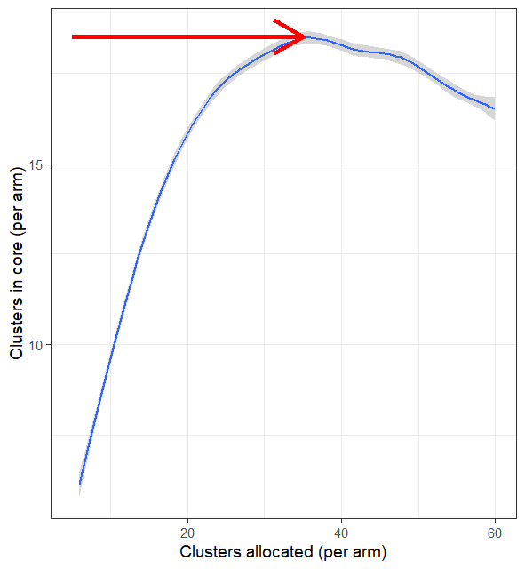
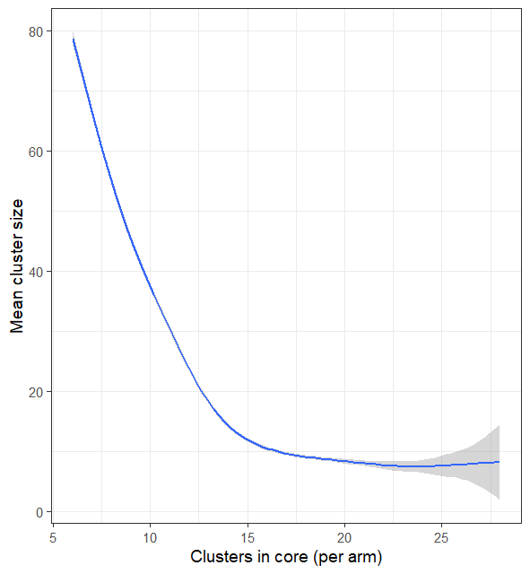
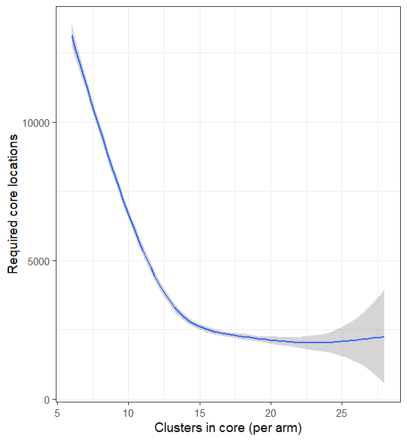
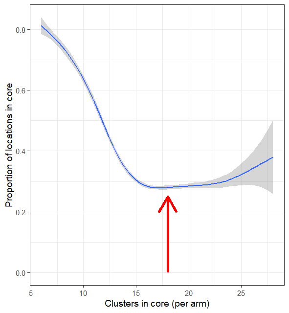
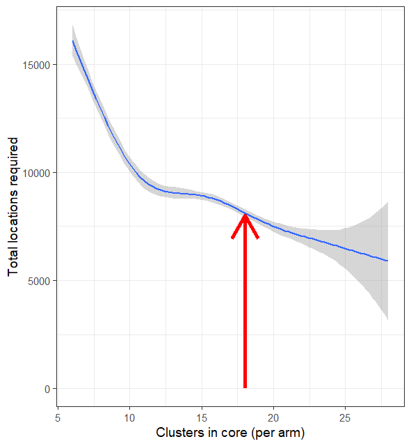

Use Case 4: Estimation of optimal cluster size for a trial with pre-determined buffer width
Usecase4.RmdBoth the number and size of clusters affect power calculations for CRTs:
- If there are no logistical constraints, and contamination can be neglected (as in trials of vaccines that enrol only small proportions of the population), there is no need for a buffer zone and the most efficient design is an individually randomized CRT (i.e. a cluster size of one). In general, a trial with many small clusters has more power than one with the same number of individuals enrolled in larger clusters.
- If contamination is an issue, and it is decided to address this by including buffer zones, then the number of individuals included in the trial is less than the total population. Enumeration and intervention allocation are still required for the full trial area, so there can be substantial resource implications if many people are included in the buffers. There is a trade-off between increasing power by creating many small clusters (leading to a large proportion of locations in buffer zones) and reducing the proportion of locations in buffer zones by using large clusters.
The CRTspat package provides functions for analysing
this trade-off for any site for which baseline data are available. The
example shown here uses the baseline prevalence data introduced in Use Case 1. The trial is assumed to plan to be
based on the same outcome of prevalence, and to be powered for an
efficacy of 30%. A set of different algorithmic cluster allocations are
carried out with different numbers of clusters. Each allocation is
randomized and buffer zones are specified with the a pre-specified width
(in this example, 0.5 km). The ICC is computed from the baseline data,
excluding the buffer zones, and corresponding power calculations are
carried out. The power is calculated and plotted as a function of
cluster size.
Each simulated cluster allocation is different, as are the randomizations. This leads to variation in the locations of the buffer zones, so the number of core clusters is a stochastic function of the number of clusters randomised (k). There is also variation in the estimated Intracluster Correlation (see Use Case 3) for any value of k.

Fig 4.1 Numbers of clusters
The number of clusters in the core area increases with the number of clusters allocated, until the cluster size becomes small enough for entire clusters to be swallowed by the buffer zones. This can be illustrated by the contrast in the core areas randomised with k = 6 and k = 40 (Figures 4.2 and 4.3).
Fig 4.2 Map of clusters with k =
6
Fig 4.3 Map of clusters with k =
40
Beyond this point, increasing the number of clusters allocated in the fixed area (by making them smaller) does not add to the total number of clusters. In this example the maximum is achieved when the input k is about 35 and the output k is 18.5.

Fig 4.4 Size of clusters
The size of clusters decreases with the number allocated (Figure 4.4), but does not fall much below 10 locations on average in the example because smaller clusters are likely to be absorbed into the buffer zones.
Fig 4.5 Power achievable with
given site
The power increases approximately linearly with the number of clusters in the core (Figure 4.5), but the site is too small for an adequate power to be achieved with this size of buffer, irrespective of the cluster size. Because the buffering leads to a maximum in the cluster density (number of clusters per unit area), so does the power achievable with a fixed area (Figure 4.6).
Fig 4.6 Power achievable with
given site
However the analysis also gives an estimate of how large an extended site is needed to achieve adequate power (assuming the the spatial pattern for the wider site to be similar to that of the baseline area). A minimum total number of locations required to achieve a pre-specified power (80%) is achieved at the same density of clusters as the maximum of the power estimated for the smaller, baseline site.
ggplot2::ggplot(data = results, aes(x = k_core, y = corelocations_required)) +
geom_smooth() + xlab("Clusters in core (per arm)") + ylab("Required core locations")## `geom_smooth()` using method = 'loess' and formula = 'y ~ x'

Fig 4.7 Number of clusters
required for full trial area
This is also at the allocation density where saturation is achieved in the number of core clusters (Figure 4.1), and where the proportion of the locations included in the core area reaches its minimum (Figure 4.8).

Fig 4.8 Proportions of locations
in core
Conclusions
With the example geography and the selected trial outcome, the most efficient trial design, conditional on a buffer width of 0.5 km, would be achieved by assigning about 30 clusters to each arm in a site of the size analysed, though about one third of these clusters would eliminated by inclusion in the buffer zones, so that there would be . This would be far from adequate to achieve adequate power. To achieve 80% power about 8,000 locations would be needed, in a larger trial area, of which about 2,400 would be in the core (sampled) parts of the clusters.

Fig 4.9 Size of trial area
required to achieve adequate power